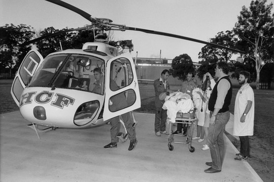
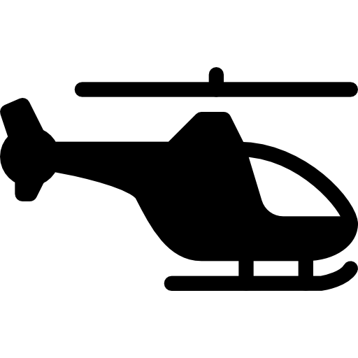
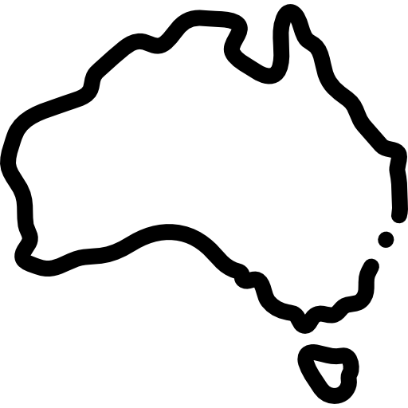
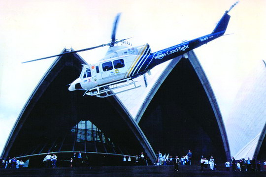
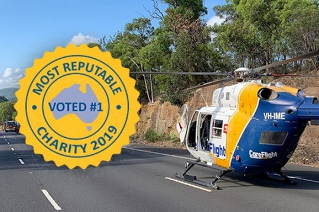
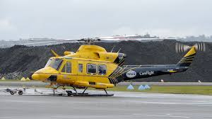

About Us
A Timeline of CareFlight in Action!
1986
A group of people had a shared vision: to create a new kind of medical retrieval service in Australia.

1987
CareFlight becomes the first emergency helicopter service in NSW to go on 24-hour duty.

1990
CareFlight implements medical registrar training scheme after becoming the first Australasian non-hospital organisation to be granted accreditation for specialist training in critical care.
1999
January: CareFlight rescues its 7,000th patient, from a crashed aircraft near Merriwa. February: CareFlight receives the 1998 Award for Aviation Safety Excellence in the AOC category. June: CareFlight signs an affiliation with Charles Sturt University for teaching and pre-hospital medical research.
2006
February: NSW Member for Parramatta Tanya Gadiel MP officially opens the Winch Simulator at Westmead. May: CareFlight treats five-year-old burns victim Sophie Delezio after she is hit by a car at a pedestrian crossing. The CareFlight medical team give Sophie a blood transfusion and place her on life support before flying her to Randwick Children’s Hospital. June: CareFlight’s rebuilt and enhanced disaster cache is deployed to earthquake devastated Java in support of the NSW/ACT Australian Medical Assistance Team. July: CareFlight celebrates 20 years of saving lives.

2012
February: CareFlight assumes responsibility for the provision of doctors to and clinical coordination of the Top End Medical Retrieval Service. May: CareFlight achieves the highest award of certification for Quality in Health Management Systems, ISO 9001+ Core Health Standards. June: CareFlight Medical Director and Chief HIRT Investigator, Dr Alan Garner, announces the outcomes of CareFlight’s Head Injury Retrieval Trial at the International Conference for Emergency Medicine in Dublin.
2016
CareFlight celebrates 30 years of saving lives, speeding recovery and serving the community. We now conduct around 5,000 missions a year. The team counts that two million bears are bought by CareFlight supporters over the last 25 years, raising $100 million to help save lives!

2020
February: CareFlight launches the second stage of our Reconciliation Action Plan which focuses on further developing and strengthening relationships with Aboriginal and Torres Strait Islander peoples, engaging staff and stakeholders in reconciliation, and developing and piloting innovative strategies to empower Aboriginal and Torres Strait Islander peoples. April: The Australian Government provides funding to CareFlight as part of an aeromedical retrieval package to increase Australia’s capacity in response to the COVID-19 pandemic. July: The Northern Territory Government appoints CareFlight as its dedicated aeromedical evacuation services jet provider, with a five-year solution that introduces a new Gulfstream G150 jet.